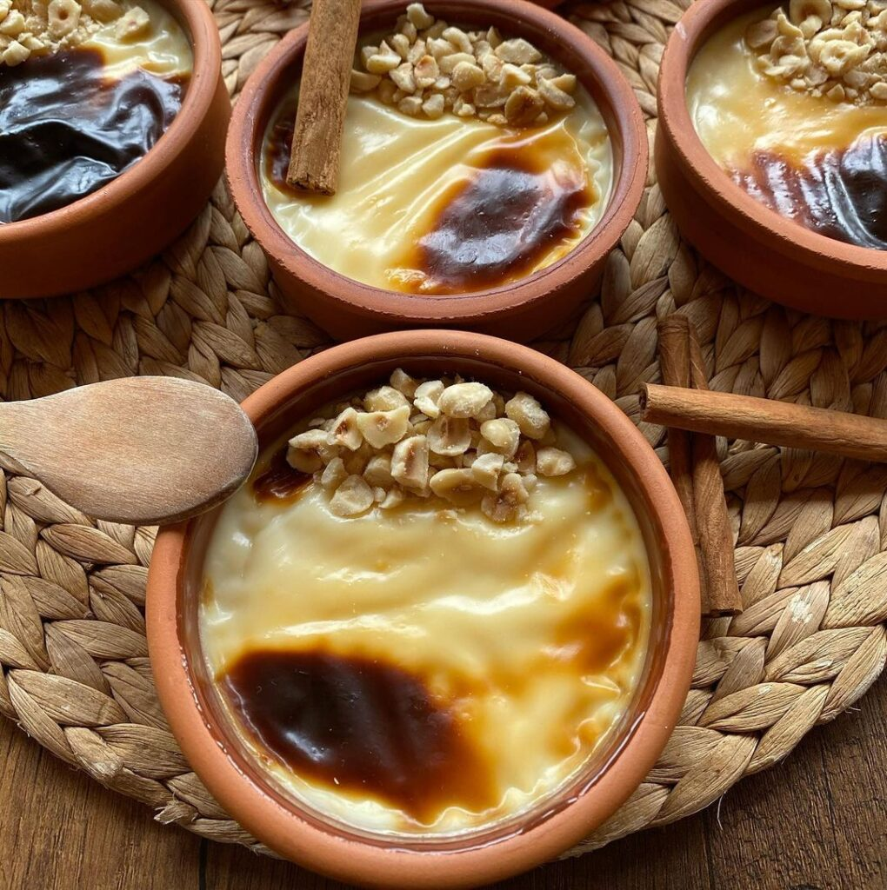
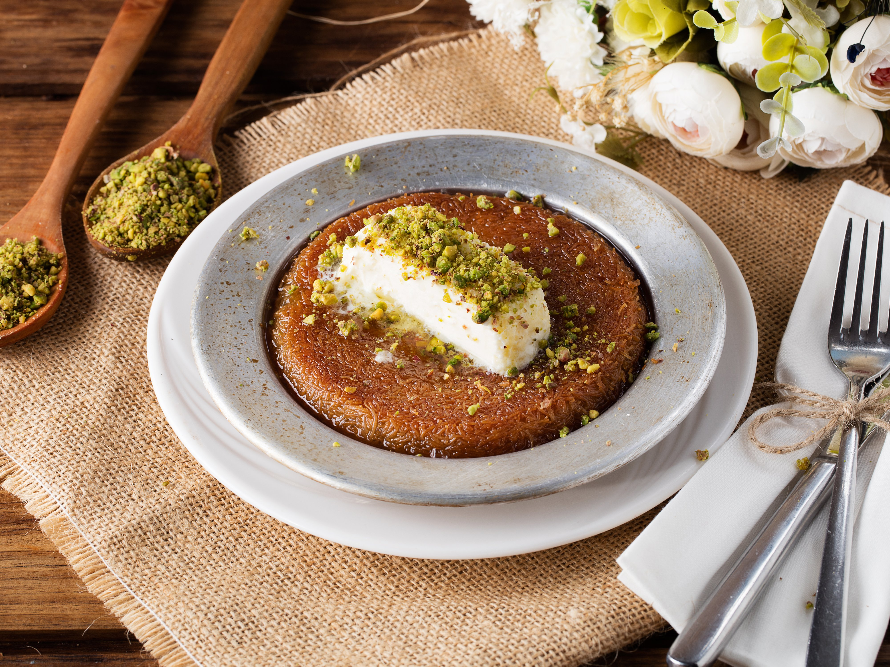

Baklava
Baklava, ince yufka katmanları arasına ceviz veya fıstık doldurulup şerbetle tatlandırılan, özellikle Orta Doğu ve Türk mutfağının ünlü tatlılarından biridir. Tatlı, tatlı ve kıtır bir dokuya sahiptir..

Sütlaç
Sütlaç, süt, pirinç, şeker ve vanilya ile hazırlanan geleneksel bir Türk tatlısıdır. Üzeri hafifçe karamelize edilir ve soğutularak servis edilir..

Künefe
Künefe, ince tel kadayıfın arasına tereyağı ve peynir eklenerek hazırlanan, ardından şerbetle tatlandırılan nefis bir Orta Doğu tatlısıdır. Üzeri genellikle taze kaymakla servis edilir..